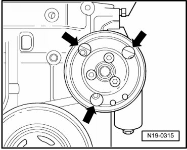
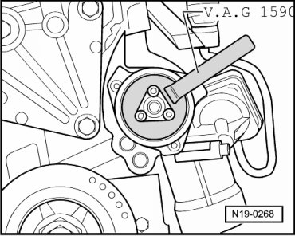

Water Pump: Service and Repair
Coolant Pump
Special tools, testers and auxiliary items required
• Drip tray (V.A.G 1306)
• Torque wrench (5 to 50 Nm) (V.A.G 1331)
• Water pump wrench (V.A.G 1590)
Removing
- Drain coolant --> [ Cooling System, Draining and Filling ] Procedures.
- Remove ribbed belt --> [ Ribbed Belt ] Ribbed Belt.
• To remove the coolant pump, the pulley need not be removed.
- Remove coolant pump bolts through holes in belt pulley - arrows - and remove coolant pump.

If coolant pump must be replaced:
- Remove belt pulley. Hold belt pulley with water pump wrench (V.A.G 1590) when doing this.

Installing
Installation is performed in the reverse of removal, noting the following:
- Lubricate new O-ring with coolant.
- Install coolant pump.
- Tighten bolts. Tightening Specifications 8 Nm
- Install ribbed belt --> [ Ribbed Belt ] Ribbed Belt.
- Fill with coolant --> [ Cooling System, Draining and Filling ] Procedures.